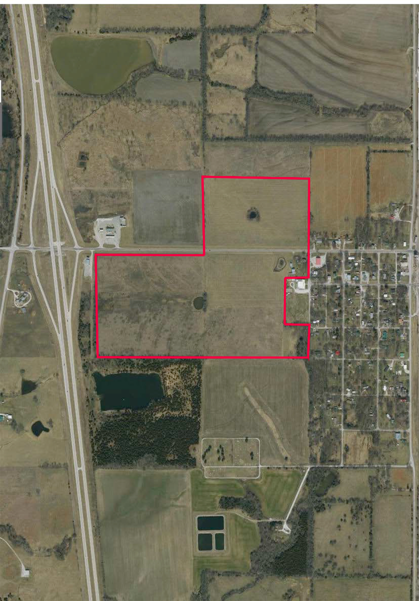
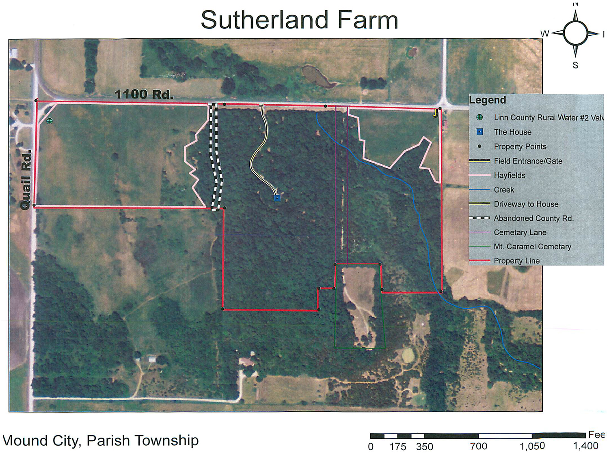

Prescott Property High Linn Farms
110 acres of productive Kansas farmland
Located near Prescott, Kansas along 300 Road, this 110-acre property is a working farm built for productivity and long-term value. The land is a mix of hay ground and CRP acres, providing both income potential and excellent wildlife habitat.
Three ponds anchor the property, offering water for livestock and attracting wildlife throughout the year. A collection of outbuildings adds practical working infrastructure to this versatile piece of Kansas ground.

Seasons at Prescott
Pleasanton Property
Timber, wildlife, and wide-open Kansas sky
Located near Pleasanton, Kansas, this property is a hunter's and nature-lover's dream. Rolling timbered hills provide excellent habitat for whitetail deer, wild turkey, and a rich variety of native wildlife.
From the deck you can watch deer move through the oaks at first light and listen to turkeys work the ridges at dawn. Each season brings something new — from icy mornings draped in snow to lush green summers alive with wildlife.
